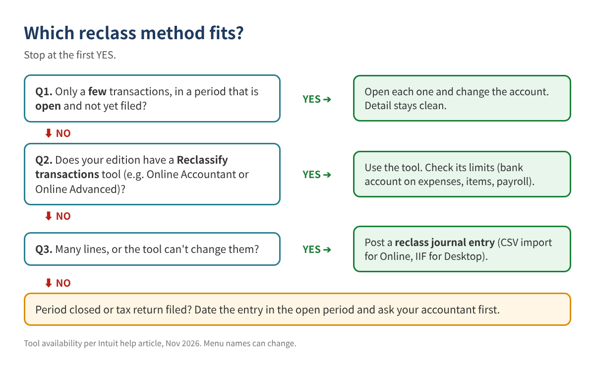
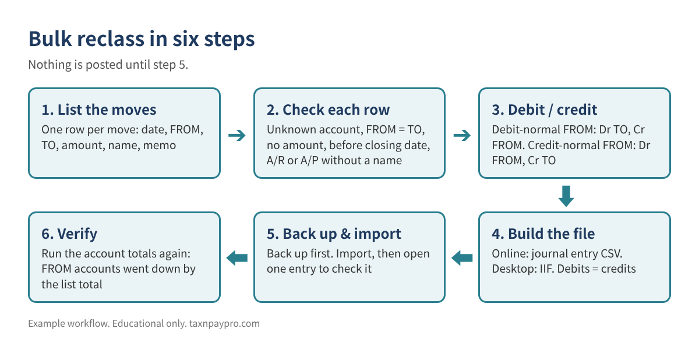
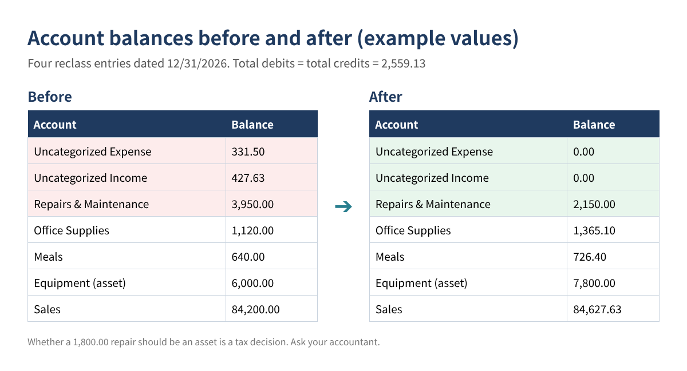

Dozens of Transactions in the Wrong Account? How to Reclassify Them in Bulk with One Checked Journal Entry
Year-end is here, and the Profit & Loss shows hundreds or thousands of dollars in Uncategorized Expense and Uncategorized Income, plus a few dozen transactions coded to the wrong account. Opening each one and changing the category could take an afternoon. A batch reclassify tool exists, but only in some editions, and it can't change every kind of transaction.
This guide shows a faster, safer way: list every move once in a spreadsheet, let simple formulas decide the debit and credit side and check each row, then post the result as one or a few journal entries. It works for QuickBooks Online (CSV import) and QuickBooks Desktop (IIF import), and the same logic works in any accounting software that imports journal entries.
Who this is for: owners, bookkeepers and tax preparers cleaning up miscoded transactions before closing the year or preparing a return.
First: choose the right method
A reclass journal entry is not always the best tool. If you only have a few transactions and the period is still open, editing the original transaction keeps the history cleanest. The journal entry approach is best when the list is long or the transactions can't be edited easily.

According to Intuit's help article, the Reclassify transactions tool is available in QuickBooks Online Accountant (for clients on any subscription) and in QuickBooks Online Advanced. The article lists the path as Settings > Dimensions > Dimension assignment > Reclassify transactions, then you choose Profit and Loss or Balance Sheet accounts, select transactions, select Reclassify, pick the new account, class or location, and Apply. It also lists limits: you can't change the bank or credit card account on expenses, transactions with items allow class changes only, and payroll transactions must be fixed in payroll. Anything the tool can't change is a good candidate for a journal entry.
How a reclass entry works
A reclass moves an amount out of one account (FROM) and into another (TO). Which side is the debit depends on the FROM account's normal balance:
- Debit-normal accounts (expenses, cost of goods sold, assets): debit TO, credit FROM.
- Credit-normal accounts (income, liabilities, equity): debit FROM, credit TO.
Example: 245.10 of office supplies sits in Uncategorized Expense. Expenses are debit-normal, so: Dr Office Supplies 245.10 / Cr Uncategorized Expense 245.10. And 427.63 of sales sits in Uncategorized Income. Income is credit-normal, so: Dr Uncategorized Income 427.63 / Cr Sales 427.63.

Step 1: Export your chart of accounts and the lines to move
- Export your chart of accounts to a sheet named Accts: account name in column A, and type in column B. In column C, write the normal side: Debit for expenses, COGS and assets, Credit for income, liabilities and equity.
- Run a transaction report for the accounts you are cleaning (for example, Uncategorized Expense for 2026) and export it. This is your source list.
Use the account names exactly as the software shows them. For sub-accounts, use the full Parent:Sub form. Intuit's import article warns that using only the sub-account name causes a "Line Account Invalid" error.
Step 2: Build the reclass list
On a sheet named Moves, one row per move:
| Date (A) | FROM (B) | TO (C) | Amount (D) | Name (E) | Memo (F) |
|---|---|---|---|---|---|
| 12/31/2026 | Uncategorized Expense | Office Supplies | 245.10 | Staples receipts, Mar-Nov | |
| 12/31/2026 | Uncategorized Expense | Meals | 86.40 | Client lunch 9/12 | |
| 12/31/2026 | Repairs & Maintenance | Equipment | 1,800.00 | Compressor, per CPA | |
| 12/31/2026 | Uncategorized Income | Sales | 427.63 | Etsy payouts Oct |
Table 1. Example values only. One move per row; you can group several rows into one entry later.
You can combine many small items with the same FROM and TO into one row, as long as your memo or a backup sheet lists what is inside.
Step 3: Let formulas pick debit and credit
Add these columns to Moves (Excel 365 or Google Sheets; use VLOOKUP if you don't have XLOOKUP):
G Normal side of FROM: =XLOOKUP(B2, Accts!$A:$A, Accts!$C:$C, "?") H Debit account: =IF(G2="Debit", C2, B2) I Credit account: =IF(G2="Debit", B2, C2)
Now each row tells you exactly which account to debit and which to credit.
Step 4: Check every row before you import
Put your closing date (the date the books are locked through) in cell K1, then add a check column:
J: =IF(COUNTIF(Accts!$A:$A,B2)=0,"Unknown FROM", IF(COUNTIF(Accts!$A:$A,C2)=0,"Unknown TO", IF(B2=C2,"FROM = TO", IF(N(D2)<=0,"No amount", IF(A2<=$K$1,"Before closing date", IF(AND(OR(ISNUMBER(SEARCH("Receivable",B2&C2)),ISNUMBER(SEARCH("Payable",B2&C2))),E2=""),"Name needed","OK"))))))
Only rows marked OK go into the import file. Accounts receivable and payable lines need a customer or vendor name, which is why the last test is there.
Step 5: Build the import file
QuickBooks Online: journal entry CSV
Intuit's article lists these fields: Journal No., Journal Date, Account Name, Debits, Credits and Description, plus an optional name. Each move becomes two lines:
| Journal No. | Journal Date | Account Name | Debits | Credits | Description |
|---|---|---|---|---|---|
| RC-2026-01 | 12/31/2026 | Office Supplies | 245.10 | Reclass from Uncategorized Expense | |
| RC-2026-01 | 12/31/2026 | Uncategorized Expense | 245.10 | Reclass to Office Supplies | |
| RC-2026-02 | 12/31/2026 | Uncategorized Income | 427.63 | Reclass to Sales | |
| RC-2026-02 | 12/31/2026 | Sales | 427.63 | Reclass from Uncategorized Income |
Table 2. Example CSV rows. Keep all lines of one entry on the same Journal No. and date, and use a new number for the next entry.
Before saving the CSV, check =SUM(Debits)=SUM(Credits) for the whole file and for each Journal No. (a SUMIFS by number works).
To import: Settings (gear) > Import Data > Journal Entries, then Browse, choose the file, Next, map the fields, Next, Start import. Intuit's article also says to turn off account numbers before importing, add any new accounts first, and that if "Warn if duplicate journal number is used" is on, entries with numbers already in use will fail. Download Intuit's sample file from the import screen if you want to compare layouts.
QuickBooks Desktop: IIF file
Desktop imports journal entries from a tab-separated IIF text file. Each entry starts with a TRNS line, has one SPL line per other account, and ends with ENDTRNS. Positive amounts are debits and negative amounts are credits:
!TRNS TRNSTYPE DATE ACCNT AMOUNT DOCNUM MEMO !SPL TRNSTYPE DATE ACCNT AMOUNT DOCNUM MEMO !ENDTRNS TRNS GENERAL JOURNAL 12/31/2026 Office Supplies 245.10 RC-2026-01 Reclass SPL GENERAL JOURNAL 12/31/2026 Uncategorized Expense -245.10 RC-2026-01 Reclass ENDTRNS
IIF import has no undo, so back up the company file first, then use File > Utilities > Import > IIF Files. Test with one entry before importing the full list.
Step 6: Verify
Run the Profit & Loss (or the account list) for the same dates. Each FROM account should be lower by the total of its rows, and each TO account higher by the same amount.

Common mistakes
- Getting the sign backward on income. Moving money out of an income account is a debit to that account, not a credit.
- Using only the sub-account name in the CSV. Use Parent:Sub.
- Dating the entry in a closed or filed period. Date it in the open period unless your accountant says otherwise.
- Reclassing bank or credit card accounts with a journal entry to fix a wrong bank. That changes your reconciled balances. Fix the transaction instead.
- One giant entry with no backup. Keep the Moves sheet with the entry so anyone can see what was moved and why.
- Reclassing A/R or A/P without a name. The open balance lands on no customer or vendor.
FAQ
Does a reclass entry change my taxes?
Moving between two expense accounts usually doesn't change net income, but it can change how items are treated (for example, meals or equipment). Moving income into or out of income accounts does change profit. Review with your tax preparer.
Should I date the entry at year-end or on the original dates?
Year-end is common for cleanup, but if you need monthly reports to be right, use the original month for each row. Never use a date in a locked period without your accountant.
Can I undo an import?
Imported journal entries in Online can be deleted one by one. IIF imports in Desktop have no undo, which is why you back up first.
Why not just edit the transactions?
If there are only a few, do that. A journal entry leaves the original transaction in the old account, so transaction reports show both the original and the reclass.
Checklist
- ☐ Method chosen: edit, reclassify tool, or journal entry
- ☐ Chart of accounts exported with the normal side for each account
- ☐ Moves list built; every row marked OK
- ☐ Debits = credits for the file and for each entry
- ☐ Account numbers off, new accounts added, backup made (Desktop)
- ☐ Imported, one entry opened and checked
- ☐ FROM and TO account totals verified; Moves sheet saved with the entry
Prefer a ready-made builder?
Our Bulk Reclass Journal Entry Builder (Etsy and Gumroad, English or English + Korean) does all of the above: it picks the debit and credit side, checks every row, and writes both the Online CSV and the Desktop IIF layout from the same list, with a 6-page guide.
This article is educational only and is not tax, legal or accounting advice; which account is right depends on your facts, and no particular outcome is guaranteed. Example values are made up. Menu names can change. QuickBooks is a registered trademark of Intuit Inc.; not affiliated with or endorsed by Intuit.
Sources (checked November 2026): Intuit, "Import journal entries in QuickBooks Online": https://quickbooks.intuit.com/learn-support/en-us/help-article/import-export-data-files/import-journal-entries-quickbooks-online/L4tQBwbs7_US_en_US · Intuit, "Reclassify or move multiple transactions": https://quickbooks.intuit.com/learn-support/en-us/help-article/reclassify-transactions/reclassify-move-multiple-transactions/L249lPKyg_US_en_US · Intuit, "How to reclassify transactions in QuickBooks Online Advanced": https://quickbooks.intuit.com/learn-support/en-us/help-article/reclassify-transactions/reclassify-transactions-quickbooks-online-advanced/L88eDKSmC_US_en_US